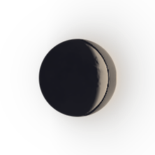

🌒 WAXING CRESCENT · Rebirth, Dawn & New Beginning · BRAT ENERGY · DAWN ANTHEM
CORE — WE OWN THE MORNING
📜 Official Synchronized Lyrics (47 Lines)
▶ 00:00WE OWN THE MORNING, WE OWN THE LIGHT!
▶ 00:02NOTHING LEFT FOR US TO HIDE!
▶ 00:04ALL THE WORDS WE KEPT INSIDE
▶ 00:06COME ALIVE, COME ALIVE!
▶ 00:08WE GOT THE SUNRISE, LET IT BURN
▶ 00:11LET THE WHOLE WORLD TURN AND TURN!
▶ 00:15W E O W N T H E M O R N I N G · W E O W N T H E L I G H T
▶ 00:29WE OWN THE MORNING! · WE OWN THE LIGHT!
▶ 00:355:15, THE SHUTTERS RISE
▶ 00:38YELLOW CABS UNDER FADING SKIES
▶ 00:40TWO PAPER CUPS OF BLACK TEA HOT
▶ 00:43STANDING RIGHT HERE ON THE LOT
▶ 00:45JACKET ON, TURNED INSIDE OUT
▶ 00:47LEAVING ZERO ROOM FOR DOUBT!
▶ 00:50LET THEM KEEP THEIR QUIET RULES
▶ 00:52PAPER LAWS AND WOODEN STOOLS!
▶ 00:55WE DON'T ASK FOR HAND-ME-DOWNS
▶ 00:57WE JUST RUN THIS WHOLE DAMN TOWN!
▶ 00:59WE OWN THE MORNING, WE OWN THE LIGHT!
▶ 01:02NOTHING LEFT FOR US TO HIDE!
▶ 01:04ALL THE WORDS WE KEPT INSIDE
▶ 01:06COME ALIVE, COME ALIVE!
▶ 01:08WE GOT THE SUNRISE, LET IT BURN
▶ 01:10LET THE WHOLE WORLD TURN AND TURN!
▶ 01:17BAKER OPENS UP THE STORE
▶ 01:19UNLOCKS THE HEAVY WOODEN DOOR
▶ 01:21SUNLIGHT HITTING BRICK AND STONE
▶ 01:23WALKING LIKE WE OWN THE ZONE
▶ 01:25THOUSAND EYES BEHIND THE GLASS
▶ 01:29WATCH US MAKE THE MOMENT LAST!
▶ 01:35DAYLIGHT HITTING ON OUR SKIN
▶ 01:37THIS IS WHERE WE BOTH BEGIN!
▶ 01:40KNOCK THE DOORS AND BREAK THE FRAME
▶ 01:42WE AIN'T PLAYING BY THEIR GAME!
▶ 01:45W E O W N T H E M O R N I N G
▶ 01:55WE OWN THE MORNING! · WE OWN THE LIGHT!
▶ 02:15WE OWN THE MORNING, WE OWN THE LIGHT!
▶ 02:18NOTHING LEFT FOR US TO HIDE!
▶ 02:20ALL THE WORDS WE KEPT INSIDE
▶ 02:22COME ALIVE, COME ALIVE!
▶ 02:24WE GOT THE SUNRISE, LET IT BURN
▶ 02:27LET THE WHOLE WORLD TURN AND TURN!
▶ 02:35THE CITY'S WAKING UP... AND SO ARE WE
▶ 02:43WE GOT THE SUNRISE... WE OWN THE MORNING!
▶ 02:52THE CITY'S WAKING UP... AND SO ARE WE!
▶ 03:00WE GOT THE SUNRISE, LET IT BURN — WE OWN THE MORNING!
▶ 03:09W E O W N T H E M O R N I N G